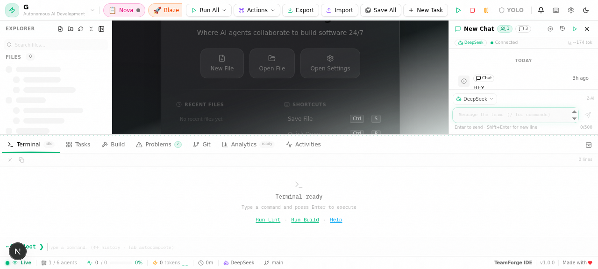
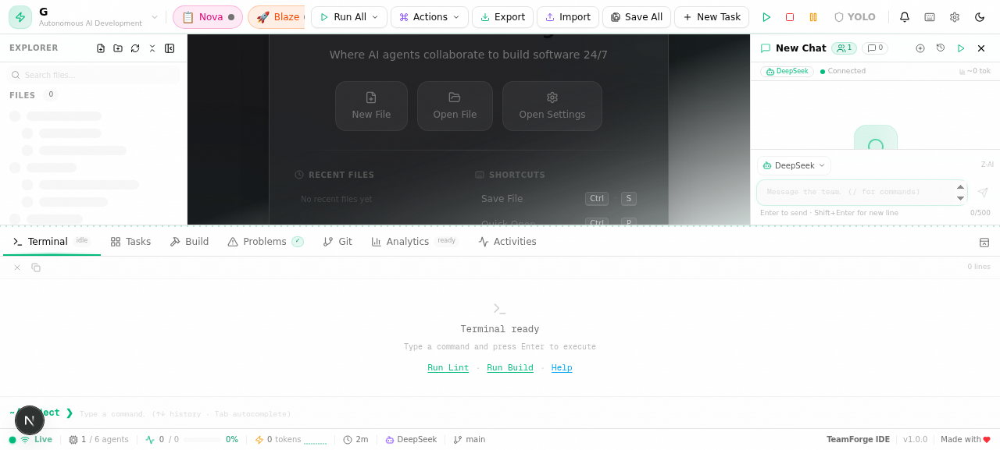
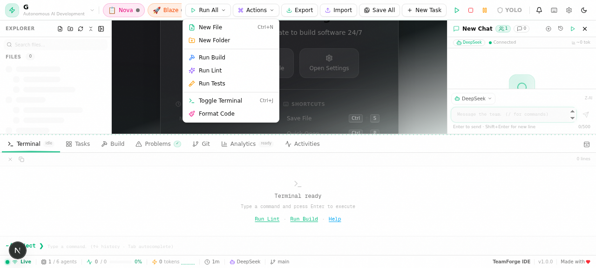
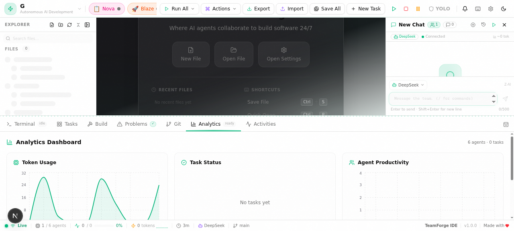

Autonomous AI Development Environment
Version 1.0 • March 2026
TeamForge IDE is an autonomous, AI-powered development environment that fundamentally changes how you write software. Instead of working alone, you collaborate with a team of six specialized AI agents—each an expert in its domain. Together, they architect solutions, write production-quality code, review for issues, test thoroughly, handle deployments, and keep your project on track.
Unlike traditional IDEs that merely assist with syntax highlighting and autocomplete, TeamForge IDE acts as a true pair-programming partner. The agents communicate with each other, break complex tasks into manageable steps, and execute them autonomously when you enable YOLO Mode. The result is a dramatically accelerated development workflow where you focus on high-level decisions while the AI team handles the implementation details.
The TeamForge IDE interface is designed for efficiency and clarity, combining a conversational AI chat with a full-featured development workspace. Let's walk through each panel and its purpose.

Figure 2.1 — The main TeamForge IDE interface with all panels visible
The IDE is divided into two primary regions. The left panel houses the chat interface, conversation history, and agent selector. The right panel is a tabbed workspace containing the Code Editor, Terminal, Analytics Dashboard, and Kanban Board. A collapsible sidebar provides quick access to files in the Virtual File System.
This is your primary interaction point with the AI agents. Type messages at the bottom input bar, and responses appear in a threaded conversation above. The current active agent is displayed at the top, and you can switch agents manually or let the system auto-route your request. Slash commands (like /help or /run) are triggered from here.
The tabbed workspace adapts to your current task. The Editor tab provides a full-featured code editor with syntax highlighting and multi-file support. The Terminal tab runs real commands in a sandboxed environment. The Analytics tab shows token usage and agent metrics. The Kanban tab offers drag-and-drop task management.
Press Ctrl+Shift+P to open the Command Palette—a searchable overlay that gives you instant access to every action, setting, and command in the IDE. Start typing to filter results, then press Enter to execute.
The heart of TeamForge IDE is its team of six specialized AI agents. Each agent is purpose-built for a specific phase of the software development lifecycle. When you submit a request, the system automatically routes it to the most appropriate agent, or you can directly address a specific agent for targeted assistance.
Agents don't work in isolation. When you submit a complex request like "Build and deploy a user authentication system", the collaboration unfolds naturally:
This pipeline operates automatically when YOLO Mode is enabled, or step-by-step with your approval in standard mode.
The chat panel is your primary interface for interacting with the AI agents. It supports natural language conversations, slash commands, and maintains a full history of all your sessions.
Figure 4.1 — The chat history panel with multiple conversation sessions
The chat panel operates like a modern messaging interface. Type your message in the input bar at the bottom and press Enter to send. Agent responses stream in real-time, showing the thinking process and final output. Each message is tagged with the agent that produced it, and code blocks within messages are syntax-highlighted and copyable.
Every conversation is automatically saved as a session. The history panel (accessible via the sidebar icon) lists all sessions chronologically. You can rename sessions for easy identification, delete old ones, or resume a previous conversation exactly where you left off. This is especially useful for long-running projects where you want to maintain context across multiple work sessions.
Slash commands provide quick access to common actions directly from the chat input. Type / to see the full list of available commands. Here are the most frequently used commands:
/help Show available commands/run Execute a file or command/edit Open a file in the editor/explain Explain selected code/fix Fix errors in current file/refactor Refactor selected code/optimize Optimize performance/search Search across the codebase/commit Commit current changes/status Show project status/create_file Create a new file/run_tests Execute test suite/deploy Deploy the project/refactor Make this function use async/await instead of callbacks gives the agent specific direction while using the convenience of a command shortcut.
The built-in code editor provides a rich editing experience with syntax highlighting, intelligent formatting, and tight integration with the AI agents and Virtual File System. It's designed so you can review and modify agent-generated code without leaving the IDE.
Press Ctrl+Enter to run the currently active file. The output appears in the Terminal tab. The system automatically detects the file type and uses the appropriate runtime (Node.js for JavaScript/TypeScript, Python for .py files, etc.). Any errors are highlighted inline with suggestions from the AI agents for fixing them.
Press Ctrl+S to save the current file to the Virtual File System. All files are persisted in the database, so they survive page refreshes and browser restarts. The VFS supports full CRUD operations—create, read, update, and delete—and agents can also read and write files as part of their workflow.
When an agent modifies a file, the editor automatically updates to show the changes. Diff indicators appear in the gutter to highlight added, modified, or removed lines. You can accept or reject individual changes before saving, giving you fine-grained control over what goes into your codebase.
TeamForge IDE includes a fully functional terminal for executing commands, and an Actions dropdown menu for quick access to common operations. Both are integrated with the AI agents, so you can run commands manually or let the agents execute them as part of their workflow.

Figure 6.1 — The Terminal panel with real command execution output
The terminal provides a real command-line environment where you can run shell commands directly. It supports standard input and output, colorized output for better readability, and command history navigation with the up/down arrow keys. The terminal is sandboxed for security, executing only whitelisted commands.
The following command categories are permitted in the terminal:
| Category | Examples | Purpose |
|---|---|---|
| Package Managers | npm install, bun add, pip install | Install dependencies |
| Build Tools | npm run build, tsc, webpack | Compile and bundle code |
| Test Runners | npm test, jest, pytest | Execute test suites |
| Git | git status, git add, git commit | Version control |
| File Operations | ls, cat, mkdir | Explore and manage files |
| Dev Servers | npm run dev, bun dev | Start local development servers |

Figure 6.2 — The Actions dropdown menu for quick operations
The Actions dropdown provides one-click access to frequently used operations without needing to type commands. It includes options like Run File, Run Tests, Format Code, Fix Errors, Explain Code, and Deploy. Each action is routed to the appropriate AI agent for execution, combining convenience with the power of the agent system.
TeamForge IDE supports multiple AI providers, giving you flexibility in choosing the models that power your agents. You can mix and match providers, assigning different models to different agents based on the task requirements and your budget.
| Provider | Models | Connection | Best For |
|---|---|---|---|
| Z-AI (DeepSeek) | DeepSeek Coder, DeepSeek V3 | Cloud (API key) | Code generation, general reasoning |
| NVIDIA NIM | 50+ free models (Llama, Mistral, Gemma, etc.) | Cloud (API key) | Experimentation, diverse tasks |
| OpenAI-Compatible | Any OpenAI-format model | Local or cloud | Ollama, LM Studio, custom endpoints |
The default provider, Z-AI, offers DeepSeek models that are specifically optimized for code generation and technical reasoning. DeepSeek Coder excels at understanding complex codebases and producing accurate, well-structured code. Configuration is simple—enter your API key in Settings and you're ready to go. Z-AI provides fast response times and competitive pricing.
NVIDIA NIM provides access to over 50 free models through their inference API, including popular open-source models like Llama 3, Mistral, Gemma, Phi, and more. This is an excellent option for experimentation and for tasks where different model architectures may perform better. The free tier includes generous rate limits suitable for development use. Simply sign up for an NVIDIA developer account and obtain your API key to get started.
For users who prefer local inference or have custom model deployments, TeamForge IDE supports any OpenAI-compatible API endpoint. This includes popular local runners like Ollama and LM Studio, as well as self-hosted or enterprise API gateways. Configure the base URL and optional API key in Settings. This is ideal for air-gapped environments, data-sensitive projects, or when you want to use fine-tuned models.
YOLO Mode is TeamForge IDE's autonomous execution mode. When enabled, AI agents perform actions automatically without requiring your confirmation for each step. This dramatically accelerates workflows, especially for well-defined tasks where you trust the agents to execute correctly.
In standard mode, every agent action requires your explicit approval before execution. When an agent wants to create a file, run a command, or modify code, a confirmation dialog appears. While this provides maximum safety, it can slow down multi-step tasks.
YOLO Mode removes these confirmations. When you submit a request, the agents plan and execute the full workflow autonomously. Atlas designs the architecture, Codey writes the code, Prism reviews it, Flux tests it, Blaze deploys if needed, and Nova tracks everything—all without pausing for your approval at each step.
Toggle YOLO Mode using the switch in the top toolbar, or press Ctrl+Shift+Y. A prominent indicator appears when YOLO Mode is active, so you're always aware of the current state.
| Aspect | Standard Mode | YOLO Mode |
|---|---|---|
| Action Approval | Required for every action | Automatic, no confirmation |
| Speed | Slower (wait for user) | Fast (continuous execution) |
| Safety | Maximum control | Relies on agent accuracy |
| Best For | Learning, risky operations | Well-defined tasks, prototyping |
| Rollback | Easy (reject changes) | Use git or VFS history |
The Analytics Dashboard provides real-time visibility into your AI agent usage, token consumption, task progress, and overall productivity. Understanding these metrics helps you optimize your workflow, manage costs, and identify bottlenecks.

Figure 9.1 — The Analytics Dashboard with token usage and agent productivity metrics
The token usage panel tracks how many tokens each AI provider has consumed over time. This is critical for managing costs, especially when using paid API providers. The dashboard shows total tokens, tokens per agent, and a breakdown of prompt tokens vs. completion tokens. A sparkline chart visualizes usage trends so you can spot patterns and plan your API budget accordingly.
The task status overview shows the current state of all active and completed tasks. Tasks are categorized as Pending, In Progress, Completed, or Failed. This gives you an at-a-glance view of project health and helps identify stalled tasks that may need your attention.
Each agent's productivity is tracked and displayed, including the number of tasks completed, average response time, and success rate. This helps you understand which agents are most effective for different types of tasks and whether a particular agent might benefit from a different AI model configuration.
In addition to the analytics charts, the Kanban Board tab provides a visual task management interface with drag-and-drop columns: Backlog, To Do, In Progress, Review, and Done. Tasks can be created manually or automatically by the agents. Nova (the PM agent) keeps the board updated as tasks progress through the pipeline. You can also drag tasks between columns to update their status manually.
TeamForge IDE provides comprehensive keyboard shortcuts for efficient workflow. Press Ctrl+Shift+/ at any time to view the full shortcut reference overlay. Below is the complete reference table.
| Shortcut | Action | Description |
|---|---|---|
| Ctrl+Shift+P | Command Palette | Open the searchable command palette for quick access to any action |
| Ctrl+Shift+/ | Keyboard Shortcuts | Display the full keyboard shortcuts reference |
| Ctrl+Shift+Y | Toggle YOLO Mode | Enable or disable autonomous agent execution |
| Ctrl+, | Open Settings | Access IDE configuration and AI provider settings |
| Esc | Close Overlay | Dismiss any open modal, palette, or overlay |
| Shortcut | Action | Description |
|---|---|---|
| Ctrl+S | Save File | Save the current file to the Virtual File System |
| Ctrl+Enter | Run File | Execute the current file in the terminal |
| Ctrl+Z | Undo | Undo the last editor action |
| Ctrl+Shift+Z | Redo | Redo the last undone action |
| Ctrl+F | Find | Open the find dialog for searching within the current file |
| Ctrl+H | Find & Replace | Open find and replace with regex support |
| Ctrl+G | Go to Line | Jump to a specific line number in the current file |
| Ctrl+D | Select Next Occurrence | Add the next occurrence of the current selection to the cursor |
| Tab | Indent | Indent the selected lines or insert a tab character |
| Shift+Tab | Outdent | Decrease the indentation of selected lines |
| Shortcut | Action | Description |
|---|---|---|
| Enter | Send Message | Submit the current chat message to the active agent |
| Shift+Enter | New Line | Insert a new line in the chat input without sending |
| Ctrl+L | Clear Chat | Clear the current conversation (does not delete history) |
| ↑ / ↓ | History Navigation | Cycle through previously sent messages |
| Shortcut | Action | Description |
|---|---|---|
| Ctrl+1 | Editor Tab | Switch to the code editor workspace |
| Ctrl+2 | Terminal Tab | Switch to the terminal panel |
| Ctrl+3 | Analytics Tab | Switch to the analytics dashboard |
| Ctrl+4 | Kanban Tab | Switch to the Kanban board |
| Ctrl+B | Toggle Sidebar | Show or hide the file explorer sidebar |
Getting the most out of TeamForge IDE requires understanding how to communicate effectively with the AI agents and structuring your workflow to leverage their strengths. Here are proven strategies from experienced users.
The more context you provide, the better the agents perform. Instead of saying "Fix the bug," say "Fix the null reference error in the handleSubmit function of src/components/Form.tsx that occurs when the user clicks submit without filling in the email field." Specific requests lead to precise, accurate solutions with fewer iterations.
While the system auto-routes requests, you can explicitly address agents for better results. Prefix your message with an agent name: "@Codey implement the authentication middleware" or "@Prism review the payment processing module for security issues." Direct addressing avoids misrouting and ensures the specialist agent handles the task.
Don't treat YOLO Mode as an all-or-nothing switch. Enable it for well-understood, repetitive tasks like scaffolding boilerplate code, running test suites, or formatting files. Disable it for complex architectural decisions, security-sensitive changes, or unfamiliar codebases where you want to review each step.
Make regular git commits before and after significant agent actions. This creates natural checkpoints you can roll back to if an agent's changes don't meet expectations. Use the /commit slash command for quick commits with auto-generated messages.
Even though Prism reviews code automatically, take a moment to review the changes yourself before deployment. Look for business logic errors that AI might miss—agents understand code patterns well but may not fully grasp your application's unique domain requirements.
| Issue | Solution |
|---|---|
| Agent not responding | Check your AI provider connection in Settings. Verify your API key and test the connection. |
| Slow responses | Switch to a faster model or check your network connection. Consider using a local provider (Ollama) for lower latency. |
| Inaccurate code | Provide more context and specific requirements. Break large tasks into smaller, well-defined subtasks. |
| Terminal command blocked | The command is not whitelisted. Add it in Settings under "Terminal > Allowed Commands." |
| File not found error | Ensure the file path is correct relative to the VFS root. Use the file explorer to verify paths. |
| Token limit exceeded | Start a new chat session to reset the context window, or switch to a model with a larger context length. |
TeamForge IDE • Version 1.0 • User Manual • March 2026
Autonomous AI Development Environment